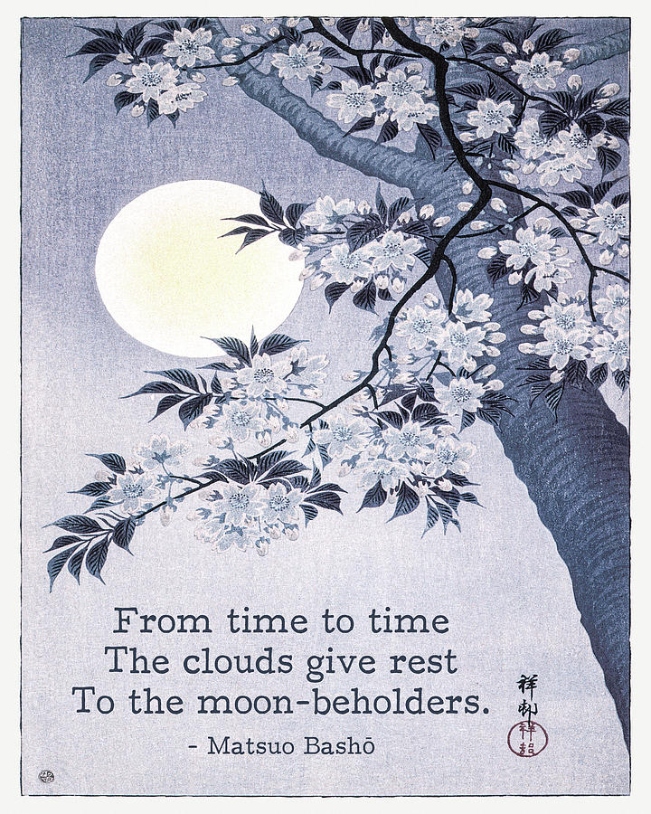

Sample Essays:

Confrontation, Friction, or Assimilation: Bashō's Self and Other (2024)
What does it mean to wander? In Matsuo Bashō 's The Narrow Road to the Deep North, the self doesn't travel through the world so much as slowly dissolve into it.
Creative Pieces:


Placeholder (2024)
placeholder.